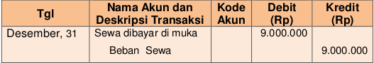

perusahaan memanfaatkan aset tetap tentunya nilainya dari hari ke hari semakin berkurang (kecuali tanah), entah karena usang atau bahkan rusak. Sehingga perusahaan harus membayar biaya karena telah memanfaatkan aset tersebut (Inggat ..!!! Aset jika digunakan atau dimanfaatkan bukan dijual akan berubah menjadi biaya). Biaya terkait dengan aset tetap berwujud disebut dengan biaya penyusutan.
Contoh:
Tanggal 1 Januari 2017 perusahaan membeli bangunan yang akan digunakan untuk usaha senilai Rp100.000.000,00 dan memiliki umur manfaat (umur bangunan tersebut dapat digunakan untuk usaha) selama 10 tahun. Pada akhir tahun kesepuluh diperkirakan bangunan tersebut laku dijual Rp20.000.000,00. Penyusutan tiap periode sama.
Berikut adalah rumus untuk menghitung besarnya penyusutan:
Penyusutan = (nilai perolehan-nilai residu) / umur manfaat
Nilai perolehan : harga beli
Nilai residu : harga jual akhir masa manfaat
Berdasarkan rumus tersebut, maka besarnya penyusutan bangunan per periode adalah (Rp100.000.000,00-Rp20.000.000,00)/10 tahun = Rp8.000.000,00 pertahun. Jika penyusunan laporan keuangan dilakuakn persemster maka Rp8.000.000,00 / 2 = Rp4.000.000,00.
